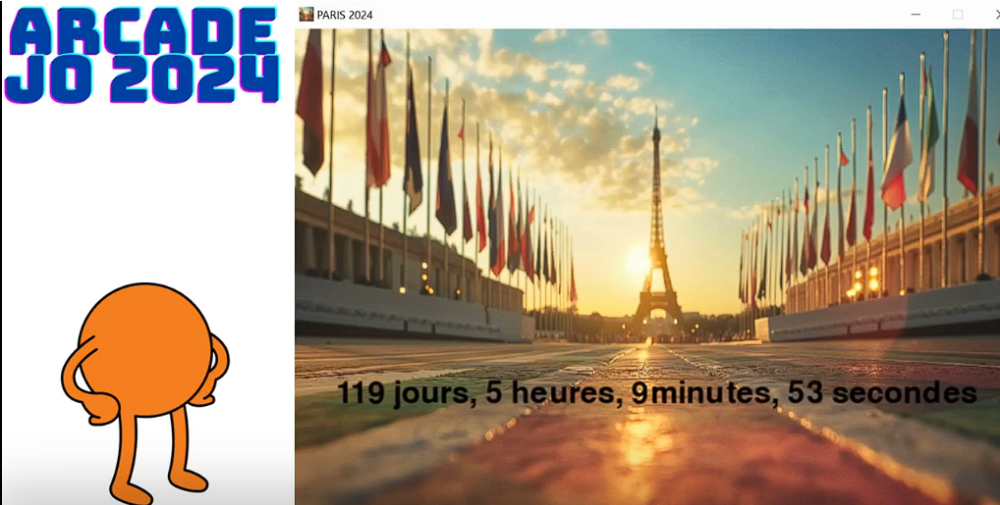

Création d’un jeu en Python récompensé par le 1er prix régional des Trophées NSI.

Pour le concours national des Trophées NSI, l'objectif était de créer une application complète et engageante sur le thème des JO de Paris 2024 en utilisant exclusivement le langage Python. Le défi était de passer de l'idée initiale à un produit fini, fonctionnel et capable de convaincre un jury.
Notre projet a été récompensé par le 1er prix régional, une formidable reconnaissance qui a valorisé notre travail d'équipe et la qualité de notre jeu. Cette première expérience de gestion de projet de A à Z a été fondatrice et a confirmé ma passion pour la création de solutions numériques utiles et créatives.